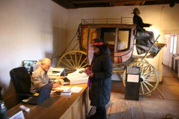
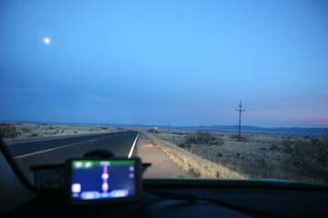
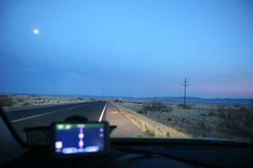
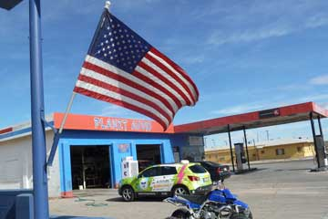
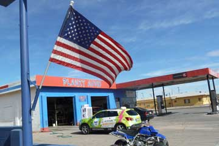
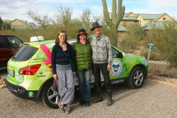
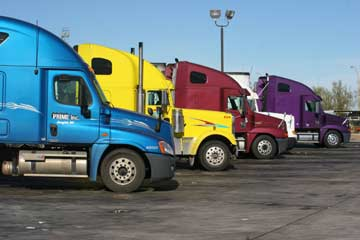

Først da vi begyndte at pakke bilen opdagede vi at generatoren var stjålet! Også voltmeteret, en mobiltelefon og et tæppe manglede. Vi ærgrede os uden at kunne stille noget op. En bidende kold, grå og trist dag. Klokken 9 passerede vi grænsen til Texas, og da vi nu kørte helt uden sikkerhedsline havde vi ingen varme i bilen for at spare på strømmen. Til siderne så vi den moderne landbrugs-industri med kæmpestore siloer og koncentrationslejre for mange tusinde køer der bliver opfedet. Så kom uendelige marker med majs og bomuld. Prærien var fuldstændig flad og vejen komplet lige. Her og der så vi fattige rønner, rustne maskiner og bilvrag. De små industrier og små landbrug var gået i forfald. I Amarillo solgte de Honda generatorer, men ikke med 220 volt. Politiet i Clovis havde ikke fundet vores generator. Så enten skal vi fortsætte uden eller få en sendt fra Danmark. Om aftenen spiste vi på en historisk bar på Route 66 med Elliot i klapvognen.


Solen skinner og der er langt mellem byerne så vi holder frokostpause i en uendelig stor afhøstet majsmark i frisk blæst. Om aftenen går vi tur i Clovis langs hovedvejen, som også er byens hovedgade. Der er ingen fortove, men tung trafik og masser af skilte. Vi er de eneste som går tur til fods. På tilbagevejen går vi gennem et mørkt fattigkvarter med en trist blanding af små forfaldne træhuse og fastgroede autocampers. Det er næsten fuldmåne, en hund gør og en oppustet plasticsnemand står og pynter foran et hus. En ejer af et lidt større hus har hængt mange lyskæder op. Ellers er der ikke meget jul at se - de fleste butikker er ikke pyntede. Kun en rund krans med en rød sløjfe hænger her og der. Vi vandrer tilbage til motellet og sætter Grønne til at lade fra airconditionstikket.

De sidste bjerge før den store prærie var for hundrede år siden gemmested for banditter og slagmark for skruppelløse forretningsfolk. Mest berømt og berygtet i Lincoln-country hvor 1874 og 75 var rene krigsår. Lincoln er idag en lille næsten uddød flække med et interessant museum og flere bevarede wild-west huse. Her dræbte Billy the Kid to vagter og flygtede fra arresten. Vi brugte flere timer i Lincoln og kan anbefale et besøg. Vejen fortsatte ned til UFO byen Roswell, hvor der foran en butik stod et skilt med Aliens welcome! Det morede Grønne sig over. På et motel lejede vi et værelse hvor vi kunne bytte varmeapparetets stik ud med et ladestik til Grønne. Det er blevet for koldt til at campere, så vi må fra nu af satse på at lade fra motellerne.
Nina og Hjalte
 

Dagen begyndte med varme bade på hotel Charles' badeafdeling. Helt slappe i benene gik Hjalte og jeg op på RV pladsen hvor vi fandt Grønne helt opladet. Vi gik ind på kontoret og betalte for 10 timers opladning. Det blev 4,50 dollars for strømmen, og vi fik gode ønsker med på vejen. Så pakkede vi sammen, købte ind, og spiste brunch. Senere holdt vi en times pause i San Antonio, hvor vi købte et par gamle nummerplader i en antikbutik. Den venlige danske Anne Lund drev benzintank med en lille butik og cafe, og da vi fortsatte havde vi fået både kaffe og kage og strøm. Det blev hurtigt mørkt. Fuldmånen skinnede over det store øde landskab, der var hundrede kilometer til den næste by. Syd for landevejen lå White Sands Missile Range hvor verdens første atombombe blev sprængt i 1945. Der var nogle lange bakker vi skulle op over inden vi kunne trille hurtigt nedad. Men 20 kilometer før mål var strømmåleren på 0. Så var det frem med generatoren i en time ved siden af den mørke landevej. Nåede så frem til Rainbow Inn i Carrizozo. Vi fik et værelse og Grønne fik en ladeledning ud ad døren.
 

Det var lørdag og i byen Deming kunne vi ikke finde et åbent værksted med strøm. På byens RV-park var bestyreren gået. Vi koblede alligevel Grønne til en ladestander og gik på mexicansk restaurant. Senere købte vi kager og kaffe i en stille og hyggelig kristen boghandel. Da vi 3 timer senere vendte tilbage til Grønne var den næsten fuldt opladet og bestyreren, en lille rund kvinde, ville ikke have nogle penge. Vi fortsatte videre ind i New Mexico. Vores mål var byen Thruth or Consequence, som er berønt for sine varme kilder. Men den kilde vi havde sigtet på var optaget. Vi kørte rundt i byen uden at finde elstik til Grønne. Tilsidst indlogerede vi os på Charles hot springs and spa - et hotel med store badekar. Hjalte og jeg hentede lækre italienske pizzaer. Til sidst kørte vi op til byens RV park. Klokken nærmede sig midnat og kontoret var lukket. Vi for rundt med multimeteret indtil vi fandt en ledig ladestander med 220 volt mellem de store Recreational Vehicles.


Med kun 62 % opladning om morgenen har vi en dag med en lang frokost-ladepause foran os hvis vi skal gøre os håb om at komme bare 200 km fremad. Vejret er klaret op, og luften er renere efter at Ida med et velrettet spark sendte vores gamle utætte primus til helvede hvor den hører hjemme. Et akacietræ havde i nattens løb dryppet harpiks ud over bilen men Hjalte fik det renset af. I Willcox spiste vi i en restaurant indrettet i en togvogn imens Grønne fik strøm fra et bilværksted. Nede ved jernbanen i Arizonas ældste fungerende butik med cowboyudstyr købte Ida en smart foret kedeldragt, og jeg købte et par Wrangler syet med guldtråde. Vi kom til Lordsburg i New Mexico, men ingen hoteller ville eller kunne give os strøm. Vi fandt en KOA-campingplads og betalte for en hytte og en RV plads til Grønne. Det var første gang de havde besøg af en elbil.

I Tucson er Bookman en stor boghandel som har lavet ladestik for elbiler. Elkøretøjerne fra Zero-Race, som vi mødte i Shanghai, havde også været forbi og lade der. Vi ladede indtil klokken 16. Boghandelen var interessant, og der var internetforbindelse, men det var ærgerligt at sidde der og ikke kunne køre. På cafeen overfor grinede de af vores landlige fremtoning. Vejret var blevet koldere og det regnede da vi omsider kørte videre til Benson. Der var mange moteller, men vi valgte at leje en hytte på en lejrplads for at få strøm. For sent opdagede vi at der kun var 110 volt strøm på pladsen. Nødløsningen blev at lade med generator indtil kl 22, derefter 110 volt og fra kl 8-10 om morgenen igen generator. Resultatat blev kun sølle 62 % opladning.
Nina


Vi var ude af teltene og så solen stå op som i et flammehav over Phoenix. Grønne rullede ned af bjerget med de store saguarokaktus. Vi fortsatte raskt fremad mellem de mange store lastvogne på motorvejene. I et indianerreservat standsede vi for at spise. Det eneste man kunne købe i byens eneste butik var sprut, chips, slik og softdrinks. På gadehjørnet sad der heldigvis to store indianerkoner og solgte tortillas med bønner og salat. Vi holdt en tre timers spise- og ladepause i ørkenen, nok til at nå op til den miljørigtige Milagro kollektivbebyggelse udenfor Tucson. Kun for at opdage at der ingen lademuligheder var! Jerry Asher, som havde inviteret os, lånte os et værelse hvor vi kunne overnatte. Jerry er en stor elbil-enthusiast og har kørt hele USA rundt i en ombygget Toyota Prius.

Omsider kom dagen hvor jeg, Grønne, kunne starte fuldt opladet. Nina, Hjalte Ida og lille Elliot ville også være med på noderne, så jeg kørte dem hen til en truckercafe hvor de spiste morgenmad. Imens det sner længere østpå, er der op til 27 grader celcius her i Arizona. Mine passagerer lå i en varm kilde i en hel time midt på dagen. Imens blev jeg fodret med lidt 120 volt strøm. I frokostpausen blev jeg sat til lat lade fra et stik til en juletræskæde foran Alice's Restaurant (den originale). Bagefter kunne jeg så kravle op ad bjerget til en naturpark udenfor Phoenix. Det var blevet helt mørkt, og jeg var ærlig talt ved at løbe ud for strøm. Lykkeligvis fandt vi en plads ved siden af nogle kæmpekaktusser hvor der var et ordentligt stik med stærk strøm. Sådan endte min hidtil bedste strømdag i USA.
Hilsen fra Grønne


På Sam's Family Spa i Palm Springs nød vi bassinerne med det varme vand hele formiddagen. Vejen ud i ørkenen gik ned og ned, så Grønne rullede faretruende hurtigt og kom langt på sin strøm. Det var mørkt da vi kørte over Coloradofloden og kom ind i Arizona. Da den ikke kunne mere slog vi os ned på en RV-park mellem to stærkt befærdede veje. Her boede kun snowbirds, pensionister der flytter fra kulde til det gode vejr her sydpå om vinteren. Strømmen til Grønne var stærk og god, og der var også et stort fælleshus med køkken hvor vi varmede lidt dåsemad. Gruspladsen hvor vi skulle slå teltene op var hård som beton. Det var ikke nuligt at slå pløkkene ned, så Hjaltes og mit telt måtte bindes fast mellem bilen, ladestanderen og vandposten. Idas kuppeltelstod bare.
Nina